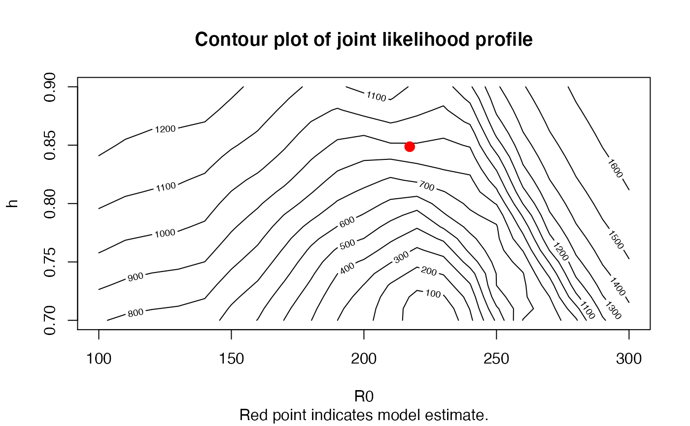
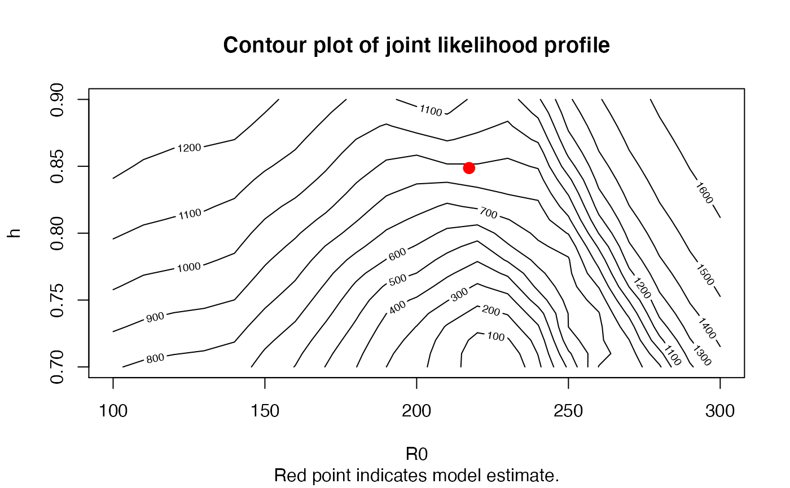

Profile the likelihood for parameters of assessment models.
Usage
# S4 method for Assessment
profile(fitted, figure = TRUE, ...)
# S4 method for RCModel
profile(fitted, figure = TRUE, ...)Arguments
- fitted, Assessment
An object of class Assessment.
- figure
Logical, indicates whether a figure will be plotted.
- ...
A sequence of values of the parameter(s) for the profile. See details and example below. See details for name of arguments to be passed on.
Value
An object of class prof that contains a data frame of negative log-likelihood values from the profile and, optionally, a figure of the likelihood surface.
Details
For the following assessment models, possible sequence of values for profiling are:
DD_TMB and DD_SS:
R0andhSP and SP_SS:
FMSYandMSYDD and cDD_SS:
R0andhSCA and SCA_Pope:
R0andhSCA2:
meanRVPA:
F_termSSS:
R0
For RCM: D (spawning biomass depletion), R0, and h are used. If the Mesnil-Rochet stock-recruit function
is used, can also profile MRRmax and MRgamma.
Examples
# \donttest{
output <- SCA(Data = MSEtool::SimulatedData)
# Profile R0 only
pro <- profile(output, R0 = seq(1000, 2000, 50))
 # Profile both R0 and steepness
pro <- profile(output, R0 = seq(1000, 2000, 100), h = seq(0.8, 0.95, 0.025))

# Ensure your grid is of proper resolution. A grid that is too coarse
# will likely distort the shape of the likelihood surface.
# }
# Profile both R0 and steepness
pro <- profile(output, R0 = seq(1000, 2000, 100), h = seq(0.8, 0.95, 0.025))

# Ensure your grid is of proper resolution. A grid that is too coarse
# will likely distort the shape of the likelihood surface.
# }